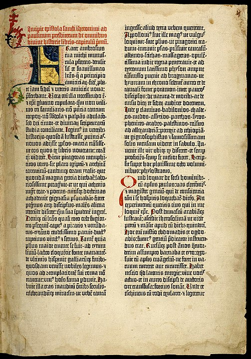
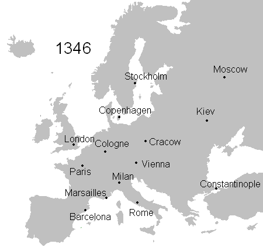

A Very Brief Bible History by
Jim J. Moore is licensed under
a Creative Commons Attribution 4.0 International License.
Presentation source at https://github.com/jdigger/bible-history-preso
A Very Brief Bible History
Agenda
Gathering the Cannon
“Cannon”
“Bible”
The Baseline
The Source
Scope of the Old Testament
Scope of the New Testament
“Other Writings”
Establishing The New Testament
A New Book?

According to Muhammad, the verses of the Quran (“Recitation”) were revealed to him through the archangel Gabriel on many occasions between 610 AD until his death in 632
Muslims believe that parts of the previously revealed scriptures, the Torah and the Gospels, had become distorted
The Quran is viewed by Muslims as the final and literal revealed word of God
| Although the Quran is the last verbatim of God towards mankind, communication with God is an ongoing process where “friends of God” could communicate with God to know God’s will and interpret the Quran. |
Recovered Writings?
The Church and The Word
Our Citizenship
What the Bible Says on Citizenship
Joining With Christ and His Church
The Rise Christendom
The Start of Unity
Rise of Rome
Rich Soil for the Gospel
Emperor Constantine the Great
The Holy Episcopal Sees (Jurisdictions)
Islamic Conquests Change the Map
The Holy Roman Empire
A Strained Relationship
The Eastern Orthodox Church
Knowing God
Infallibility of the Catholic Church

This gave rise over the centuries to the doctrine of the “infallibility” of the Catholic Church, further cementing that the individual could only understand the Bible by way of the Church
Church Doctrines
There is a tremendous amount of the Gospel that is not word-for-word explicit in the Bible, but still expressed by the Word
This “distillation” of what the Word teaches is what’s known as Church Doctrine
| A prime example would be the Trinity, which would be formally declared as we understand it in the Nicene Creed |

Doctrinal Differences
Font of Knowledge
Knowing Better
Unthinkable
Translations
The Vulgate (382)


St. Jerome’s collection and translation of the Bible into Latin was by far the best the Western Church had for a thousand years
This is what Gutenberg printed (1450s)
The Council of Trent (1545-1563) declared it to be the authentic version of the Bible, even though well before then scholars such as Erasmus had been showing issues with it based on the archeology and scholarship of the Renaissance
| This is still the official Bible of the Latin Church, though the current one (1979) is the Nova Vulgata |
The Black Death (1346-1353)


The Black Death wiped out ⅓-½ of the population of Europe (ranging as “low” as 25% to as high as 80% depending on the the region)
| The worst known pandemic in history, the main driver — the bubonic plague — still exists, and there have been outbreaks in this (the 21st) century |
Wycliffe (1384)

John Wycliffe translated the Vulgate into English so the common person could read it
Not only was it then clear that Church practice did not match the Word, the recovery of better sources showed that it was far worse than anyone thought
Fighting Heresy
Becoming Increasingly Obvious The World Is Not What We Thought
Luther’s Translation

The next major translation was Luther’s into German
| focussing on English translations, but obviously this gets into the Reformation, which is a MUCH larger topic… |